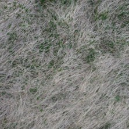
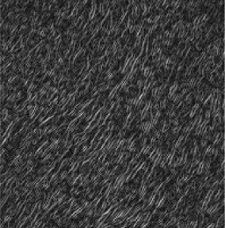
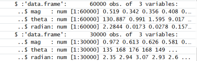
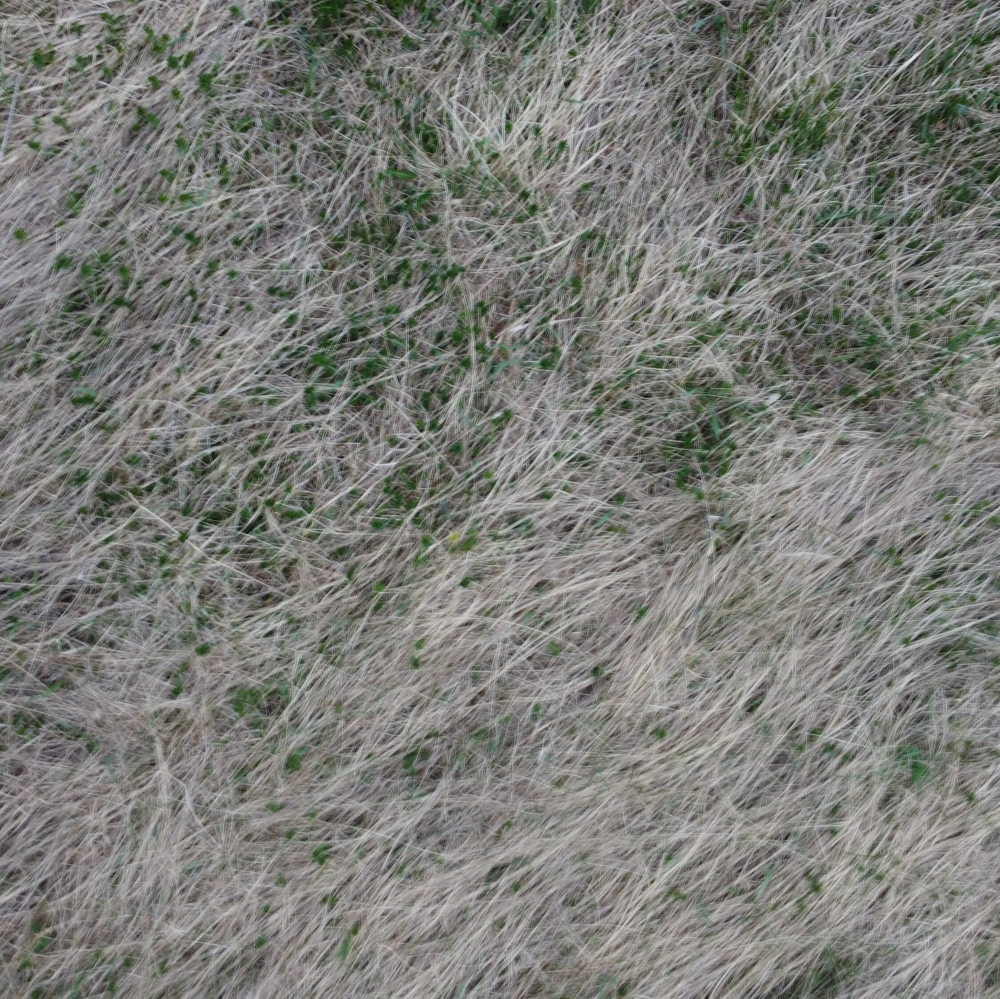
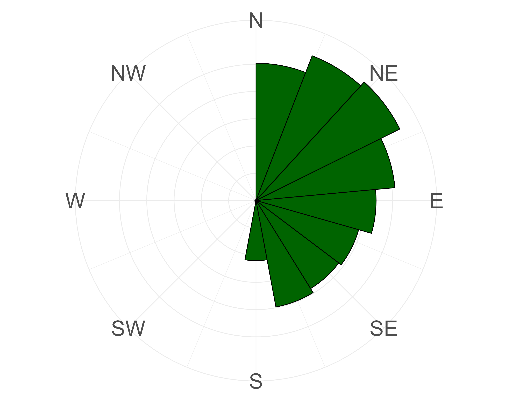
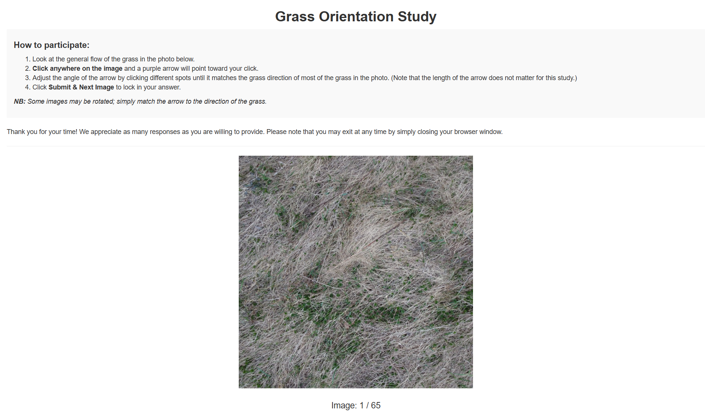

| Image | Circ. Mean | Circ. Variance | Circ. Median | Circ. IQR |
|---|---|---|---|---|
| DJI_0256 | 29.86624 | 0.9433418 | 86.04090 | 87.48395 |
| DJI_0344 | 55.83333 | 0.9337435 | 86.11589 | 87.35129 |
| DJI_0345 | 44.43737 | 0.9225823 | 84.41378 | 89.36600 |
| DJI_0346 | 47.72566 | 0.9125125 | 82.86430 | 89.01660 |
| DJI_0347 | 65.90795 | 0.9411583 | 86.89895 | 86.13982 |
| DJI_0348 | 51.95467 | 0.9250089 | 84.87817 | 87.91640 |
| DJI_0349 | 46.13757 | 0.8978368 | 82.29246 | 88.02058 |
| DJI_0350 | 58.83998 | 0.9009255 | 83.29214 | 85.42393 |
Methods
1 Methods
1.1 Gradient Analysis Techniques
In a previous senior year research project, Ben Sunshine (Sunshine (2024)) investigated the Histogram of Oriented Gradients (HOG) algorithm to automate the measurement of grass lay angles. They applied the algorithm to various images sampled from the internet and grass images from the SLU Living Lab to test the algorithm’s viability. Upon their uncovering of its viability, this current project proceeds with adapting the algorithm’s gradient analysis techniques. The HOG algorithm is a method that is used to capture the orientation of textures in an image. The first component of the HOG algorithm is to analyse gradients. An image is split into small patches called cells, and we compute the gradient magnitude and direction in each cell (Manavalan (2020)). These local gradients, magnitudes, and angles are extracted and then aggregated into vectors that describe the overall image to represent it into patterns that identify images and their texture. Figure 1 shows the raw grass image as the input, a grayscale image that is broken down into cells, and a snippet of vectors describing gradients in each cell of the image.



While the full HOG algorithm divides images into structured cells and further aggregates gradients into histograms, this study focuses on the core component of the method that extracts pixel-level gradient angles and magnitudes to capture dominant directions in grass images.
The preliminary processing of the gradient analysis included loading several R packages to support image manipulation, data handling, and statistical analysis, including tidyverse, imager, magick, tectonicr, and exif.
library(tidyverse)
library(magick)
library(imager)
library(readr)
library(exif)
library(tectonicr)For each image, the processing included loading, converting the image to grayscale, and resizing it. Images were rescaled to a fixed height while preserving their aspect ratio to ensure consistent resolution across all images without introducing geometric distortion. The images were converted to grayscale to allow for focusing on representing pixel intensity in terms of texture and structural variation, rather than color information.
img <- load.image(image) # load the image being viewed now
img_gray <- grayscale(img) # convert to gray scale
dims <- dim(img_gray) # retrieve dimensions of the grayed image
h0 <- dims[1] # the height
w0 <- dims[2] # the width
# resize to target height to keep consistent size of images
target_height <- 200
target_width <- max(1, round(w0 * (target_height / h0)))
# relative to target_height
# recalculate width to maintain same aspect ratio
img_resized <- resize(img_gray, size_x = target_width,
size_y = target_height)The processed image is stored as M. The image’s structure is defined by rows and columns of pixel values. Because the imager package loads images as 4-dimensional arrays by default (width, height, depth, and color channels), the image is first reduced to a 2D matrix by extracting only the first channel, since the grayscale image contains no color or depth information that would require additional dimensions. The dimensions of M are used to define image size, where h represents the number of pixel rows which is the height of the image and w which represents the number of pixel columns that is the width of the image.
M <- img_resized
# ensures the resized grayscale image is a 2D matrix
if (length(dim(M)) == 4)
M <- M[,,1,1]
M <- as.matrix(M)
# how many rows and cols of pixels in the images
h <- nrow(M)
w <- ncol(M)The gradient magnitudes and angles were then computed for every pixel in the resized image. At each pixel at row i and column j, the gradient is measured in two directions. The horizontal gradient, Gx, is computed by taking the difference between the pixel values immediately to the right M[i, j+1] and left M[i, j-1] of the pixel of interest. The vertical gradient, Gy, is computed by taking the difference between the pixel value below M[i+1, j] and the pixel value above M[i-1, j] it. At image boundaries where a neighboring pixel does not exist on one side, a one-sided difference is used instead. The overall gradient magnitude at each pixel is then derived by combining Gx and Gy using the Pythagorean formula, \(\text{mag} = \sqrt{G_x^2 + G_y^2}\), which captures the strength of the intensity change at that location regardless of direction.
for (i in 1:h) {
for (j in 1:w) {
Gx <- if (j == 1) M[i, j+1]
else if (j == w) -M[i, j-1]
else M[i, j+1] - M[i, j-1]
Gy <- if (i == 1) -M[i+1, j]
else if (i == h) M[i-1, j]
else M[i+1, j] - M[i-1, j]
mag <- sqrt(Gx^2 + Gy^2)
}
}The gradient angle is computed using the arctangent, atan() of the ratio of Gy to Gx, converted from radians to degrees. Grass blades are symmetric in appearance. This means that to the algorithm, a blade pointing at 10° looks the same as one pointing at 190°. Because of this, within each pixel, angles are then mapped onto a 0°–180° range. Any negative angle resulting from the arctangent calculation is shifted by adding 180° to bring it into this range.
angle <- if (Gx == 0) 0 else atan(Gy / Gx) * 180 / pi
if (angle < 0) angle <- angle + 180These values are then stored as vectors and structured as datasets describing each image. During computation, magnitudes and angles are stored row by row into lists, mag_list and theta_list, rather than directly into vectors. This is because appending to a list in R is more efficient than growing a vector element by element inside a nested loop, which would require R to copy and reallocate memory at each iteration. Once all pixel rows have been processed, the lists are converted to flat vectors using unlist() and combined into a data frame with one row per pixel containing the angle in degrees, the gradient magnitude, and the angle converted to radians. Because grass blades have defined, fine, and linear textures, these gradient extraction techniques effectively identify dominant directions and magnitudes. This supports our ability to capture a general trend or flow in the grass making gradient analysis useful for identifying a dominant grass lay direction.
# initialize lists to store the mags and theta
mag_list <- vector("list", h)
theta_list <- vector("list", h)
mag_list[[i]] <- mag_row
theta_list[[i]] <- theta_row
# Convert to vectors + save to df
mag_vec <- unlist(mag_list)
theta_vec <- unlist(theta_list)
radian_vec <- theta_vec * pi / 180
dataset_df <- data.frame(
theta = theta_vec,
mag = mag_vec,
radian = radian_vec
)To observe how this gradient analysis visualizes the dominant direction of grass in an image, Figure 2 shows a side-by-side comparison of a raw grass image from the St. Lawrence University Living Laboratory and its corresponding polar plot. The polar plot is generated by reading the per-pixel angle and magnitudes dataset saved for that image and plotting the theta column as a circular histogram using ggplot2’s coord_polar(). Each bar represents the count of pixels whose gradient angles fall within that direction, with compass directions labeled around the outside. The direction of the tallest bar represents the most frequently occurring gradient angle, giving a visual impression of the dominant grass lay direction detected by the algorithm.
df <- read_csv("../output/angles_mags/DJI_0362.csv")
ggplot(df, aes(x = theta)) +
geom_histogram(
colour = "black",
fill = "darkgreen",
breaks = seq(0, 360, length.out = 17.5)
) +
coord_polar(theta = "x", start = 0, direction = 1) +
scale_x_continuous(
limits = c(0, 360),
breaks = c(0, 45, 90, 135, 180, 225, 270, 315),
labels = c("N", "NE", "E", "SE", "S", "SW", "W", "NW")
)

To summarize the pixel-level gradient angles extracted from each image, weighted circular statistics are computed using the tectonicr package in R. Because grass orientation is directional data that wraps around, standard linear statistics such as a regular mean or variance are not appropriate. Circular statistics are instead used, which account for the nature of angular data. The gradient magnitude at each pixel serves as a weight, meaning pixels with stronger intensity changes indicating more defined grass edges contribute more to the overall directional estimate than pixels in flat regions.
For each of the 65 images, four weighted circular statistics are computed. The circular mean is the average dominant direction of gradient angles across all pixels, weighted by magnitude, and represents the algorithm’s estimate of the overall grass lay direction in the image. The circular variance measures how spread out the angles are around this mean, where a value close to 0 indicates most pixels agree on a similar direction and a value close to 1 indicates that the directions of grass in the image are more varied. The circular median is the central angle value that divides the weighted distribution in half. The circular IQR measures the spread of the middle 50% of the weighted angle distribution, capturing variability in the dominant direction without being influenced by extreme values.
# Compute weighted circular statistics
mean_val <- circular_mean(angles, w = magnitudes, axial = TRUE, na.rm = TRUE)
var_val <- circular_var(angles, w = magnitudes, axial = TRUE, na.rm = TRUE)
median_val <- circular_median(angles, w = magnitudes, axial = TRUE, na.rm = TRUE)
iqr_val <- circular_IQR(angles, w = magnitudes, axial = TRUE, na.rm = TRUE)
quantiles <- circular_quantiles(angles, w = magnitudes, axial = TRUE, na.rm = TRUE)
The axial = TRUE argument is used throughout because as discussed earlier, the grass orientation is axial, meaning pixel-level angles map onto a 0°–180° range rather than a full 360° scale, since a grass blade pointing at 10° is indistinguishable from one pointing at 190°. The circular statistics therefore operate on the same 0°–180° scale as the extracted angles, ensuring consistency between the pixel-level gradient computation and the image-level summary statistics. These statistics are compiled into a data frame with one row per image, containing the image name, date taken, and the four circular statistics, producing a full dataset for further analysis. Table 2 shows a sample of this dataset.
To validate the gradient analysis results, human assessments of the same 65 SLU Living Lab images were collected using a custom R Shiny web application, described in the following section.
1.2 Human Assessment of Grass Lay Using R Shiny Web App
As discussed in the Introduction, the Traditional Ecological Knowledge (TEK) of physically observing grass lay is a method used by Arctic community members. Hunters and gatherers will observe the direction plants lay down after the growing season as proxies for predominant wind direction and wind direction change. To replicate this observational process, we customized an app to retrieve volunteers’ perceptions of direction that grass lays. Shiny is an R package that makes it easy to build interactive web applications straight from R (Posit (2026)). We used Shiny to customize an interactive grass app to collect human assessments of the grass images’ dominant grass lay direction. 45 volunteers completed the assessment of all 65 grass images. Each participant session is assigned a unique UUID to ensure anonymity while preserving response traceability. The application presents users with the series of grass images and prompts them to indicate the dominant direction of grass lay by clicking directly on the image. Upon clicking, a visual arrow is displayed to reflect the selected direction, allowing users to adjust their response before submission. See Figure 3.

The 65 grass images are stored in a GitHub repository and retrieved at the start of each session using the GitHub API. The API call constructs a URL pointing to the images folder of the repository and uses jsonlite::fromJSON() to parse the response, extracting all filenames with image extensions into a master list called img_master_global. This approach avoids hardcoding file paths and ensures the full image set is always current without needing to update the app code when images change.
# Github variables
repo_owner <- "franriee"
repo_name <- "SYE_Grass_Study"
# Use regular images folder to get the master list of filenames
folder_api <- paste0("https://api.github.com/repos/",
repo_owner, "/", repo_name, "/contents/images")
files <- jsonlite::fromJSON(folder_api)
# Create a data frame to keep the image names
img_master_global <- data.frame(
name = files$name[grepl("\\.(png|jpg|jpeg)$", files$name,
ignore.case = TRUE)],
stringsAsFactors = FALSE
)When a new participant session begins, the Shiny server creates a session-specific shuffled copy of img_master_global by randomly reordering the rows using sample(). This means every participant sees the same 65 images but in a different order, reducing ordering effects where earlier images might systematically influence responses to later ones. To further reduce bias, a random rotation is pre-assigned to every image for that session by sampling from 0°, 90°, 180°, and 270°. This is important because the region the St. Lawrence University Living Laboratory is located experiences predominant northeasterly winds, and volunteers familiar with the site may already know this. Without rotation, a participant who recognizes the field’s geographic orientation could use that prior knowledge to guess that grass lays in the direction of the prevailing northeast wind rather than genuinely assessing the direction they perceive from the image itself. By randomly rotating each image before display, no fixed compass orientation is preserved, ensuring that responses reflect the participant’s actual visual perception of grass lay direction rather than recalled knowledge of local wind patterns.
server <- function(input, output, session) {
img_master <- img_master_global[sample(nrow(img_master_global)),
, drop = FALSE]
session_rotations <- sample(c(0, 90, 180, 270),
nrow(img_master), replace = TRUE)Each image is displayed using a Plotly-based interface. Plotly is an interactive graphing library in R that supports event-driven interactions such as mouse clicks, making it well suited for collecting user input directly on top of an image (Plotly Technologies Inc. (2026)). The image is overlaid onto a coordinate grid ranging from 0 to 1 in both the x and y dimensions, rendered as a background layer beneath an invisible heatmap. This design allows click positions to be precisely recorded without needing to re-render the grass image each time the participant adjusts their arrow.
plot_ly(
x = g, y = g, z = z,
type = "heatmap",
showscale = FALSE,
hoverinfo = "none",
source = "grass_plot",
colorscale = list(list(0, "rgba(0,0,0,0)"),
list(1, "rgba(0,0,0,0)"))
) %>%
layout(
xaxis = list(range = c(0, 1), visible = FALSE,
fixedrange = TRUE),
yaxis = list(range = c(0, 1), visible = FALSE,
fixedrange = TRUE, scaleanchor = "x"),
images = list(list(
source = github_raw_url,
x = 0, y = 1, sizex = 1, sizey = 1,
xref = "x", yref = "y", sizing = "contain",
layer = "below"
)),
margin = list(l=0, r=0, t=0, b=0),
annotations = list() # Clear old arrows on re-render
) %>%
config(displayModeBar = FALSE)
})When a participant clicks on the image, Plotly captures the click coordinates d$x and d$y. The angular direction of the click is then computed relative to the center of the image at (0.5, 0.5). The horizontal and vertical distances from the center, dx and dy, are passed to atan2() which computes the angle in radians and converts it to degrees. The result is mapped onto a 0°–360° circular scale using the modulo operator %% 360. A visual arrow is then rendered from the image center to the click position using plotlyProxyInvoke(), which updates only the annotation layer of the plot without re-rendering the background image, allowing the participant to adjust their response smoothly before submitting.
# Listen for plotly click
observeEvent(event_data("plotly_click", source = "grass_plot"),
{
d <- event_data("plotly_click", source = "grass_plot")
req(d) # require that the click is not null
# Update the last saved clicks
last_click_x(d$x)
last_click_y(d$y)
# Angle calculation from center (0.5, 0.5)
dx <- d$x - 0.5
dy <- d$y - 0.5
# Convert x,y to degrees (using atan2)
res_angle <- (atan2(dx, dy) * 180 / pi) %% 360
current_angle(res_angle)
# Update arrow
# plotlyProxy to modify only the annotation layer of the plot
# relayout updates the arrow position instantly without
# re-rendering the background grass image
plotlyProxy("img_display", session) %>%
plotlyProxyInvoke("relayout", list(
annotations = list(list(
x = d$x, y = d$y,
ax = 0.5, ay = 0.5,
xref = "x", yref = "y",
axref = "x", ayref = "y",
text = "",
showarrow = TRUE,
arrowwidth = 5,
arrowhead = 3,
arrowcolor = "#4B0082"
))
))
})
}In addition to the angular direction, the Euclidean distance from the image center to the click position is recorded as a magnitude value, computed from dx and dy using the Pythagorean formula. This distance serves as a proxy for response confidence where a click far from the center suggests a more deliberate directional choice, while a click at or very close to the center may indicate uncertainty in their choice of dominant grass lay. Because the arrow defaults to the center position (0.5, 0.5) before any click is made, a magnitude of 0 means the participant submitted without clicking, leaving the angle unchanged from its default value. We assume that these submissions do not represent a genuine assessment of grass direction and would introduce noise into the circular statistics. To address this, responses with a magnitude of exactly 0 were filtered out before computing the per-image circular statistics, retaining only submissions where the participant made a deliberate click away from the center.
# Get the click
cx <- last_click_x()
cy <- last_click_y()
dx <- cx - 0.5
dy <- cy - 0.5
mag <- sqrt(dx^2 + dy^2)All responses are stored in real time using the Google Sheets API via the googlesheets4 package, enabling immediate cloud-based logging into a Google Sheet without local storage dependencies. After each submission, a row is appended to the connected Google Sheet containing the participant’s unique session ID, the image name, the displayed rotation, the raw submitted angle, the true angle corrected for rotation by reversing the applied rotation (current_angle() - rotation() %% 360), the click coordinates, the magnitude, and a timestamp. This structure ensures full reproducibility and traceability of all responses.
# Google sheets connection
gs4_auth(path = "xxxxxxx.json")
sheet_url <- "https://xxxxxxxxxxx"
codes_sheet_url <- "https://xxxxxxxx"
# Add to Google Sheet
# Upon submission, create the row of data by creating a df
# Retrieve the name of the image the user is seeing
# Add the new data to the Google Sheet (sheet)
sheet_append(sheet_url, data.frame(
UserID = user_session_id,
Image = img_master$name[idx()],
User_Angle = round(current_angle(), 2),
True_Angle = round((current_angle() - rotation()) %% 360,
2), # reverse the rotation and that is the true angle
Rotation = rotation(),
Timestamp = format(Sys.time(), tz = "America/New_York"),
Coord_x = round(cx, 4),
Coord_y = round(cy, 4),
Magnitude = round(mag, 2)
), sheet = "Results")Just as with the gradient analysis, the submitted human responses are summarized using circular statistics computed per image across all 45 participants. Before computing the statistics, responses with a magnitude of 0 are filtered out as described earlier, retaining only deliberate submissions. The True_Angle column which represents each participant’s submitted angle corrected for the random rotation applied to that image is used as the input, ensuring that all responses are on the same scale regardless of which rotation the participant saw. For each of the 65 images, the circular mean, circular variance, circular median, and circular IQR are computed across all valid participant responses again using axial = TRUE in order to ensure that both the gradient analysis and human assessment circular statistics are summarized on the same axial scale. This produces a data frame of one row per image containing the human assessment circular statistics as seen in Table 3.
# Create a df that summarises the circular stats
humangrassanalysis_df <-
grass_csv %>%
filter(Magnitude != 0) %>% # filter
group_by(Image) %>% # to get the average results across everyone who did it
summarise(circular_mean = circular_mean(True_Angle, axial = TRUE, na.rm = TRUE),
circular_var = circular_var(True_Angle, axial = TRUE, na.rm = TRUE),
circular_median = circular_median(True_Angle, axial = TRUE, na.rm = TRUE),
circular_IQR = circular_IQR(True_Angle, axial = TRUE, na.rm = TRUE))
| Image | Circ. Mean | Circ. Variance | Circ. Median | Circ. IQR |
|---|---|---|---|---|
| DJI_0256.JPG | 68.5793556 | 0.3103773 | 63.335 | 38.25000 |
| DJI_0344.JPG | 15.9127585 | 0.2677430 | 27.900 | 45.71073 |
| DJI_0345.JPG | 49.7385234 | 0.1350962 | 49.200 | 18.88000 |
| DJI_0346.JPG | 45.4537004 | 0.2943070 | 48.300 | 17.25647 |
| DJI_0347.JPG | 0.0472472 | 0.2451050 | 125.860 | 12.53982 |
| DJI_0348.JPG | 31.8676547 | 0.1962487 | 35.960 | 17.74258 |
| DJI_0349.JPG | 39.1305206 | 0.1785787 | 40.910 | 12.90371 |
| DJI_0350.JPG | 25.1512659 | 0.2352956 | 33.075 | 16.50000 |
The findings from both the gradient analysis techniques and the human assessment of images were compared to evaluate the validity of results obtained from the gradient analysis techniques. The next section will highlight the results as well as assess this data’s association with wind data during the growing season the previous year.
References
Plotly Technologies Inc. 2026. “Plotly r Graphing Library.” https://plotly.com/r/.
Posit. 2026. “Welcome to Shiny.” https://shiny.posit.co/r/getstarted/shiny-basics/lesson1/.
Sunshine, Ben. 2024. “Applying the Histogram of Oriented Gradients Algorithm for Detecting Grass Lay Direction.” Unpublished manuscript.